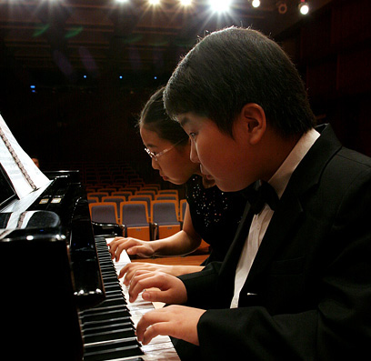
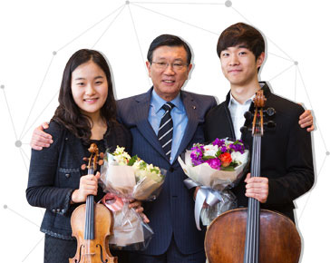
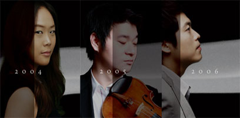

대한민국 최고의 음악영재 발굴 시스템,
금호영재콘서트/금호영아티스트 콘서트/금호영체임버콘서트

금호아시아나문화재단은 한국 클래식 음악계의 미래는 효과적이고 지속적인 차세대 음악 영재의 발굴과 지원에 달려있다는 믿음 아래, 뛰어난 실력을 갖춘 전도유망한 어린 음악인들을 선발하여 이들의 데뷔 무대를 마련해주고 있습니다.
1998년 시작된 금호영재콘서트 시리즈는 만 14세 미만의 전도 유망한 음악영재를 위한 무대입니다. 1999년에는 만 15세에서 25세 사이의 젊은 음악가들을 위해 금호영아티스트콘서트 시리즈를 마련하였으며, 이어 2008년 젊은 음악가들로 구성된 실내악단을 위한 금호영체임버콘서트를 소개하였습니다.
금호영재콘서트/금호영아티스트콘서트/금호영체임버콘서트는 매주 토요일 오후 3시와 8시에 금호아트홀에서 열리고 있으며, 매년 5월과 10월 두 차례 열리는 오디션을 통해 연주자를 선발하고 있습니다.
한국 클래식 음악의 대표적인 등용문으로 자리잡은 이 시리즈는, 현재까지 1천 여 명이 넘는 음악가를 발굴하고 길러냈습니다. 김선욱(피아노), 김태형(피아노), 손열음(피아노), 조성진(피아노), 권혁주(바이올린), 김봄소리(바이올린), 신지아(바이올린), 이지혜(바이올린), 임지영(바이올린), 조진주(바이올린), 최예은(바이올린), 이유라(바이올린&비올라), 고봉인(첼로), 문태국(첼로), 조성현(플루트), 함경(오보에), 김한(클라리넷) 등 현재 국내외에서 주목 받으며 활발한 음악활동을 펼치고 있는 젊은 음악인들이 본 콘서트를 통해 발굴되어 음악계에 데뷔하고 성장한 바 있습니다.
명품 고악기 무상임대 악기은행 제도 운영
금호아시아나문화재단은 1993년부터 명품 고악기를 구입하여 장래가 촉망되는 젊은 연주자들이 값비싼 악기에 대한 걱정 없이 오직 연주에만 몰두할 수 있도록 금호악기은행 제도를 마련하여 악기를 무상 대여하고 있습니다.
금호악기은행은 과다니니(Guadagnini) 등의 명품 바이올린과 마찌니(Maggini)와 같은 고악기 첼로를 포함, 바이올린 8점, 첼로 1점, 피아노 1에 이르는 총 10점의 악기를 운용하고 있습니다.
악기 임대자는 오디션을 통해 선정되며, 금호영재/영아티스트 출신의 젊은 연주자들이면 누구나 오디션에 응시할 수 있습니다. 현재는 피아니스트 손열음, 바이올리니스트 김다미, 김동현, 김봄소리, 이수빈, 첼리스트 김범준이 재단의 고악기 임대 수혜자로 선정되어 음악에의 열정을 불태우고 있습니다.

금호악기은행 수혜 연주자 국제 콩쿠르 수상 기록
-
2004년
바이올리니스트 권혁주 칼 닐센 국제 콩쿠르 한국인 최초 우승
-
2005년
바이올리니스트 권혁주 퀸 엘리자베스 콩쿠르 6위
-
2006년
바이올리니스트 조가현 레오폴트 모차르트 국제 콩쿠르 2위
바이올리니스트 최예은 몬트리올 국제 음악 콩쿠르 2위
-
2009년
바이올리니스트 조가현 워싱턴 국제 콩쿠르 1위
-
2010년
바이올리니스트 클라라 주미 강 인디애나폴리스 국제 바이올린 콩쿠르 1위
바이올리니스트 최예은 2위
바이올리니스트 클라라 주미 강 센다이 국제음악콩쿠르 1위
바이올리니스트 클라라 주미 강 센다이 국제음악콩쿠르 1위
-
2011년
바이올리니스트 강유경 클로스터 쉔탈 국제 바이올린 콩쿠르 2위
바이올리니스트 김봄소리 중국 칭다오 국제 바이올린 콩쿠르 1위
-
2012년
바이올리니스트 신지아 퀸 엘리자베스 콩쿠르 3위
바이올리니스트 김봄소리 하노버 국제 바이올린 콩쿠르 5위
-
2013년
바이올리니스트 김봄소리 ARD 국제 콩쿠르 1위 없는 2위
-
2014년
바이올리니스트 임지영 인디애나폴리스 국제 바이올린 콩쿠르 3위
-
2015년
바이올리니스트 임지영 퀸 엘리자베스 콩쿠르 한국인 최초 1위
-
2016년
바이올리니스트 김봄소리 몬트리올 국제 음악 콩쿠르 2위
금호 영재 출신 음악가를 위한 재단의 다양한 지원 활동,
연주자 홍보 및 대외음악활동 지원

금호아시아나문화재단은 재단을 통해 발굴된 음악 영재들 가운데 최고의 실력을 갖춘 연주자들의 성장과정에 동반하며, 이들이 훌륭한 연주자로 성장하는데 필요한 활동들을 지원해오고 있습니다.
- - 국내외 연주 기회 제공 및 계약서 체결 시 감수 등 행정 지원
- - 해외 음악계의 거장 연주자 및 음악단체, 매니지먼트사,
국제 유명 음악제에 연주자 소개 - - 주요 연주 활동에 따른 보도자료 배포 등 홍보활동 지원
대표적으로는 지휘자 크시슈토프 펜데레츠키, 로린 마젤, 앨런 길버트, 켄트 나가노 등에게 금호영재 음악가들을 소개하여 협연을 주선하였고, 바이올리니스트 이유라, 피아니스트 손열음, 바이올리니스트 최예은, 바이올리니스트 권혁주, 피아니스트 김다솔, 바이올리니스트 김다미, 바이올리니스트 장유진, 바이올리니스트 이수빈 등이 해외 무대에 진출하였습니다.
젊은 음악가, 항공권 지원
금호아시아나문화재단은 1994년 이래 유망한 젊은 음악가들이 세계로 뻗어 갈 수 있도록 지원하고자 금호음악인상 수상자 및 금호영재 출신의 젊은 음악가에게 항공권을 무료로 지원해 오고 있습니다.